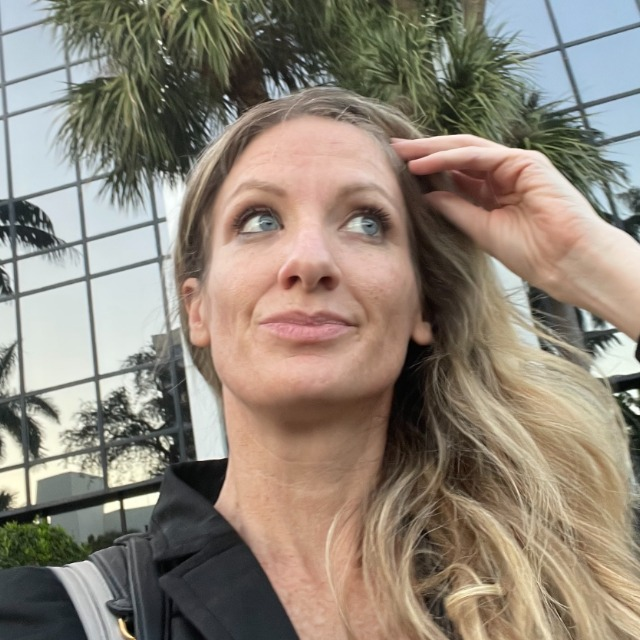

Licensed Psychologist & Child Custody Litigation Consultant
Specializing in high-conflict child custody matters involving complex family dynamics, narcissistic personalities, and parental alienation

Dr. Kristin M. Tolbert is a Florida-licensed psychologist and child custody litigation consultant specializing in high-conflict custody cases. She holds a Psy.D. in Psychology, has been qualified as an expert witness in state court proceedings, and provides custody evaluation critiques, expert witness testimony, and confidential litigation consulting for family law attorneys throughout the United States and internationally.
Dr. Kristin M. Tolbert is a Florida-licensed psychologist specializing in high-conflict child custody matters involving complex family dynamics, narcissistic personalities, and parental alienation. With a career dedicated to uncovering the truth and protecting the well-being of children, she offers a unique blend of psychological expertise and strategic litigation consultation.
Dr. Tolbert is particularly sought after for her ability to identify and expose patterns of narcissistic abuse and manipulation that often go undetected in legal proceedings.
Carefully identifying biases, flawed methodologies, and critical errors in existing evaluations to make sure outcomes are evidence-based and reflective of the child's best interests.
Developing strategies to manage emotionally charged interactions, establish firm boundaries, and minimize conflict-driven harm to children.
Providing specialized assessment and intervention strategies focused on identifying alienating behaviors and preserving healthy parent-child relationships.
Unraveling complex personality dynamics to make sure manipulative behaviors, often used to influence therapists, evaluators, and guardians ad litem, are fully understood by the court.
As a "behind-the-scenes" litigation consultant, Dr. Tolbert integrates smoothly into legal teams to develop psychologically informed case strategies. She assists attorneys in handling their most challenging cases by:
Dr. Tolbert brings extensive courtroom experience, having provided expert witness testimony in family and dependency court cases across multiple jurisdictions. Her expertise is recognized across the United States and internationally.
Dr. Tolbert has been accepted and qualified as an expert witness by state courts in family and dependency proceedings. Her expert witness services include in-person testimony and remote video testimony where permitted by the court.
Nationwide:
Remote litigation consultation available to family law attorneys throughout the United States.
International:
Remote consultation available worldwide for cross-border custody matters, Hague Convention cases, and international family law proceedings.
At the heart of Dr. Tolbert's work is a deep commitment to the families she serves. She understands the profound emotional toll of high-conflict disputes and provides guidance with the highest level of professionalism and compassion. By bridging the gap between psychology and the law, Dr. Tolbert makes sure the most nuanced aspects of a case are effectively addressed, paving the way for fair, just, and child-centered outcomes.
If you're a family law attorney seeking expert consultation or testimony, or a family navigating a high-conflict custody situation, contact Dr. Tolbert to discuss how she can help.
Dr. Kristin M. Tolbert holds a Psy.D. in Psychology and is a Florida-licensed psychologist. She has provided expert witness testimony in family and dependency court cases and has been qualified as an expert witness in state court proceedings. Her litigation consultation work extends throughout the United States and internationally.
Dr. Tolbert specializes in high-conflict child custody disputes, particularly those involving narcissistic abuse, parental alienation, and complex personality dynamics. She provides custody evaluation critiques, cross-examination question development, expert witness testimony, litigation consultation, and expert witness identification for family law attorneys nationwide.
Unlike a court-appointed custody evaluator who serves as a neutral party, Dr. Tolbert works as either a litigation consultant (behind the scenes with the legal team, protected by attorney-client privilege) or as a retained expert witness (providing testimony based on her independent professional analysis). She does not conduct custody evaluations.